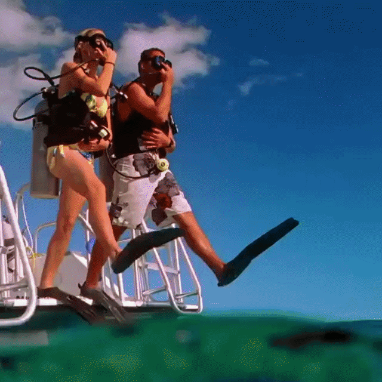
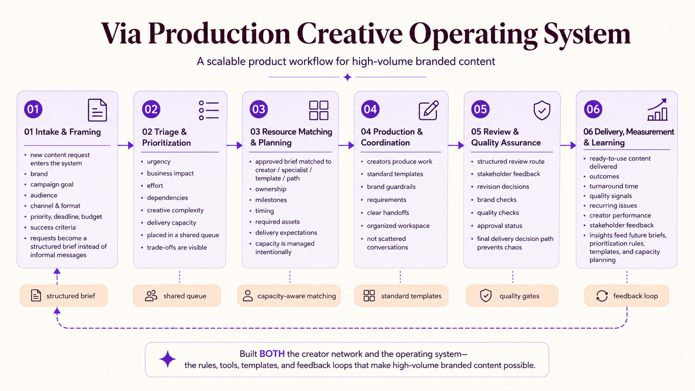
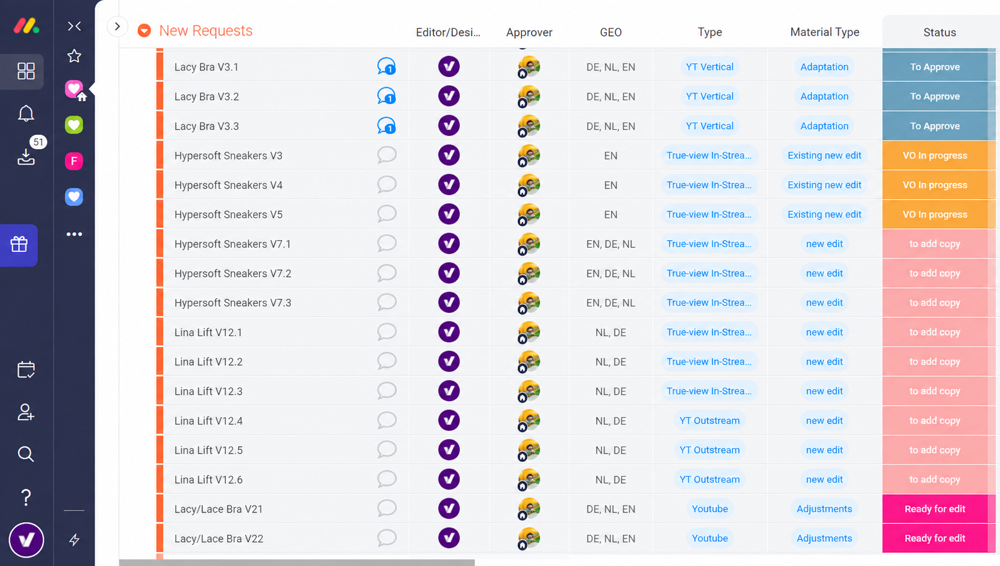

02 · Product case study · Via Production
Building a flexible production engine for scaling brands.
How I went from employee to founder, built a 30-person distributed creative network, and gave a fast-growing retailer predictable production capacity.

The opportunity
Scale content without scaling fixed cost.
Div Brands was growing quickly and needed a flexible video production model for a changing portfolio of D2C brands. Hiring editors one by one would increase cost, onboarding, and coordination overhead without guaranteeing the right creative fit.
The product decisions
Build the system around demand, talent, and trust.
Create a variable-cost model
Match production capacity to actual video demand so cost could rise or fall with the business.
Curate the creative network
Review more than 2,000 applicants and hire a distributed group with different strengths and perspectives.
Earn creative autonomy
Use market research and A/B testing to make videos perform better, then build trust through results.
Protect the margin
Optimize the in-house workflow to increase output with fewer employees while maintaining quality and profit.
The operating system
From job request to reviewed, ready-to-use content.
I created the process for intake, prioritization, hiring, assignment, review, feedback, quality assurance, and delivery. The product was the network and the operating model: a clear way for a growing business to access creative capacity without creating a new internal bottleneck.


Work in motion
A network built for creative variety.
Social-first creative made the operating model tangible: product demonstrations, performance-led concepts, and brand motion.


The result
A growing business with a production system that could keep up.
Div Brands could bring new products into market without worrying about whether video production would become the limiting factor. The model gave them more creative variety, predictable cost, and room to scale demand gradually.
Project artifact
Creative Strategy: Instagram Stories.
A visual strategy deck from March 2020, documented across 11 pages.
Open the full PDF